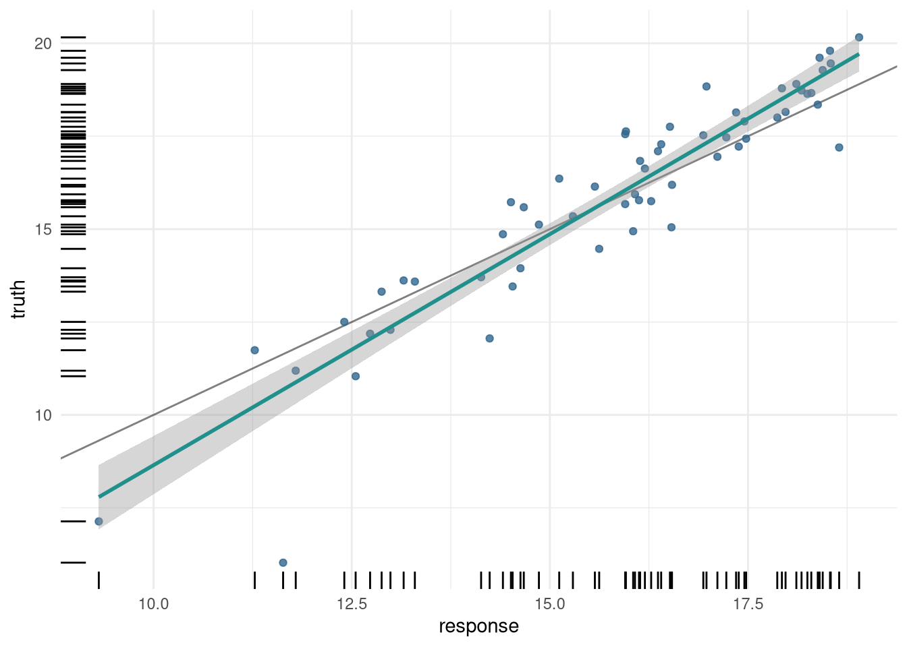
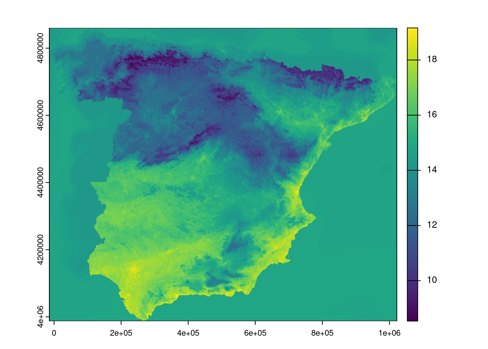

install.packages("mlr3verse")
install.packages("mlr3spatiotempcv")
install.packages("sf")
install.packages("terra")Spatial machine learning with mlr3
rstats
sml
Marvin Ludwig ![]()
This is the fourth part of a blog post series on spatial machine learning with R.
You can find the list of other blog posts in this series in part one.
Aims of this post
This post aims to give a minimal example on how to use mlr3 for a spatial prediction task. We want to get from measurements of temperature at specific locations in Spain to a spatially continuous map of temperature for all of Spain.
Such a spatial prediction task is often done by applying machine learning algorithms that are not necessarily developed for spatial tasks specifically and hence do not consider problems we might encounter in the spatial world, e.g., spatial autocorrelation or map extrapolation. In the last decade, a lot of methodological developments were made by various research groups to consider and deal with such specialties of spatial mapping. Many of which found their way in software packages such as mlr3.
Setup
library(sf)
library(terra)Casestudy data
covariates <- terra::rast("https://github.com/LOEK-RS/FOSSGIS2025-examples/raw/refs/heads/main/data/predictors.tif")
temperature <- sf::read_sf("https://github.com/LOEK-RS/FOSSGIS2025-examples/raw/refs/heads/main/data/temp_train.gpkg")
spain <- sf::read_sf("https://github.com/LOEK-RS/FOSSGIS2025-examples/raw/refs/heads/main/data/spain.gpkg") |>
st_cast("POLYGON") |>
st_transform(st_crs(temperature))
temperature <- terra::extract(covariates, temperature, bind = TRUE) |>
sf::st_as_sf()
# the sf object cannot contain a column named "X" or "Y". Otherwise the task creation will fail because "Assertion on 'data' failed: Must have unique colnames"
temperature$X <- NULL
temperature$Y <- NULLSome words about the terminology that is specific to the example data:
spainis the region outline - for visualization purposes and kNNDM setupcovariatesare the spatially explicit data data to predict on (to prevent wording confusions with the predict function or the prediction)temperatureare the measured temperature data (i.e. the response variable, i.e., the ground truth) along with the covariates at the measurement location
Official Documentation
The best general introduction to mlr3 is probably the official mlr3 book which you can access for free here: https://mlr3book.mlr-org.com/. The homepage https://mlr-org.com/ also gives a very detailed overview of all the associated packages an current developments.
The individual packages also have their own documentation pages, where you will find more specific topics. The “spatial” packages are the following:
mlr3spatialimplements support for spatial data types in R – https://mlr3spatial.mlr-org.com/mlr3spatiotemporalcvimplements spatial cross-validation methods in the workflow – https://mlr3spatiotempcv.mlr-org.com/articles/mlr3spatiotempcv.html – and also uses themlr3spatialpackage for the spatial data types handling
library(mlr3verse)
library(mlr3spatiotempcv)
library(mlr3viz)mlr3 functions can be very verbose. For this blog post, I turned off messages for a less overwhelming tutorial.
Code
lgr::get_logger("mlr3")$set_threshold("warn")
lgr::get_logger("bbotk")$set_threshold("warn")Getting started with mlr3
First of all, mlr3 uses R6 classes and therefor an object-oriented design paradigm. This might be not intuitive for a lot of R users and more in line with something like scikit-learn of Python. In general, with R6 classes you define an object first, and this object contains all the methods and parameters you can access.
The R6 class in R has a significant drawback when it comes to RStudio’s convenience features. For example, it does not provide in-line popup help for available parameters in a model. This means you must manually look up the parameters, e.g., needed for the ranger() function.”
Let’s define a minimum spatial prediction task example with mlr3 classes:
mlr3 uses its own terminology. You have to know a lot of specific terms in order to comfortably use the functions. I try to use the mlr3 terminology here and give some alternative terms in parenthesis.
Task
The task defines general information about the data we have at hand. From our point observations we create the task and define what column the target (response / dependent) variable is, what column the geometry (coordinates) is and whether we want to use the coordinates as features (predictors). In this example, we also split the data in our task into a training and a test partition.
task_spain <- mlr3spatial::as_task_regr_st(
temperature,
target = "temp",
coordinate_names = "geometry",
coords_as_features = TRUE,
crs = st_crs(temperature)
)
train_test_split <- mlr3::partition(task_spain, ratio = 0.7)st_drop_geometry()
In caret, if we want to use spatial data, we have to specifically exclude the geometry column of the sf object. We lose the spatial information in the process of model training and prediction. However, this information can be critical, e.g., if we want to use CAST::errorprofiles() or CAST::knncv(). In mlr3 we can keep the geometry and can also directly define whether we want to use the coordinates as predictors.
Learner
The learner is the model type or algorithm we want to use with all its necessary or optional parameters. Here I define a Random Forest regression method from the ranger package with 100 decision trees and an mtry of 4.
rfmodel <- mlr3::lrn("regr.ranger", num.trees = 100, mtry = 4)Measure
In order to evaluate the a score (model performance), e.g., from the previously defined test data partition, we need to define a measure. Here I use the Root Mean Squared Error (RMSE).
measure_rmse <- mlr3::msr("regr.rmse")Training, Validation and Prediction
We now have everything defined to actually do something. To train the model we can use the train method from out defined learner. And we have to tell the train method on what to actually fit the model – in this case the data in task_spain, but only the subset we sampled as training data.
rfmodel$train(task_spain, row_ids = train_test_split$train)
rfmodel$modelRanger result
Call:
ranger::ranger(dependent.variable.name = task$target_names, data = task$data(), case.weights = task$weights$weight, mtry = 4L, num.threads = 1L, num.trees = 100L)
Type: Regression
Number of trees: 100
Sample size: 136
Number of independent variables: 22
Mtry: 4
Target node size: 5
Variable importance mode: none
Splitrule: variance
OOB prediction error (MSE): 0.8517061
R squared (OOB): 0.8846182 To test how well out model performs now on unseen data, we use the predict method of our fitted learner. Again, we tell the predict method on what data to predict. We can then calculate the score of this test prediction, i.e., the RMSE we defined earlier as out measure.
test_prediction <- rfmodel$predict(task_spain, row_ids = train_test_split$test)
test_prediction$score(measure_rmse)regr.rmse
1.169592 plot(test_prediction)
Finally, we can also use the model to predict temperatures for the whole raster by using the predict() function from terra. Alternatively, we could use predict_spatial() for the mlr3spatial package.
prediction <- terra::predict(covariates, rfmodel)
plot(prediction)
Spatial cross-validation hyperparameter tuning
In many cases, the ideal model hyperparameters are not obvious and we have the possibility to tune them based on the data we have.
Define the c-v strategy and hyperparameters
Again, we first define the necessary mlr3 objects for our tuning process. With rsmp we decide on a resampling strategy, i.e., the data partitions we use as cross-validation folds. The package mlr3spatiotemporalcv contains the popular spatial resampling strategies such as block CV (spcv_block used in the example below) or kNNDM.
For the learner instead of predefined hyperparameters, we use the function to_tune() where we can specify different values for the hyperparameters we want to test.
library(mlr3spatiotempcv)
resampling_blockcv <- rsmp("spcv_block", folds = 5, range = 5000)
rfmodel <- lrn(
"regr.ranger",
num.trees = 100,
mtry = to_tune(c(2, 4, 6, 10, 12)),
min.node.size = to_tune(c(5, 10, 15)),
importance = "impurity"
)Now we can assemble everything together in a tuning instance object with the ti() function. The first four arguments should be self explanatory: terminator means, if we want to stop with our search for the best hyperparameter combination after some criteria is met. store_benchmark_results and store_models regulates whether we want to keep the measures and models for all the hyperparameter combinations we test.
Finally, we have to decide on a strategy on how to search with the tuner object. Here I use grid_search which is the brute force method that tests every possible combination once. We then execute the cross-validation with the optimize method from the tuner object.
tuning_blockcv <- ti(
task = task_spain, # the data
resampling = resampling_blockcv, # the folds
learner = rfmodel, # the rfmodel with mtry and min.node.size to tune
measures = measure_rmse, # how to measure performance
terminator = trm("none"),
store_benchmark_result = TRUE,
store_models = TRUE
)
tuner_grid_search <- mlr3tuning::tnr("grid_search")
tuner_grid_search$optimize(tuning_blockcv) min.node.size mtry learner_param_vals x_domain regr.rmse
<char> <char> <list> <list> <num>
1: 5 10 <list[5]> <list[2]> 0.8371396The results are stored in the defined tuning instance object. We also have some nice plotting options with the mlr3viz package.
tuning_blockcv$result_learner_param_vals$importance
[1] "impurity"
$num.threads
[1] 1
$num.trees
[1] 100
$min.node.size
[1] 5
$mtry
[1] 10tuning_blockcv$result_yregr.rmse
0.8371396 autoplot(tuning_blockcv, type = "parallel")Because we set store_benchmark_result = TRUE and store_models = TRUE, we also have a archive where all the other results are stored.
Tuning Archive
tuning_blockcv$archive$data min.node.size mtry regr.rmse warnings errors runtime_learners
<char> <char> <num> <int> <int> <num>
1: 10 2 1.0967280 0 0 0.088
2: 5 12 0.8445786 0 0 0.194
3: 5 2 1.0611523 0 0 0.100
4: 10 10 0.8664100 0 0 0.143
5: 15 2 1.1328312 0 0 0.076
6: 15 6 0.8977785 0 0 0.115
7: 15 12 0.8584339 0 0 0.130
8: 5 10 0.8371396 0 0 0.173
9: 5 6 0.8751873 0 0 0.135
10: 15 4 0.9558697 0 0 0.096
11: 10 12 0.8686075 0 0 0.150
12: 15 10 0.8482450 0 0 0.124
13: 10 4 0.9337196 0 0 0.098
14: 10 6 0.9080175 0 0 0.112
15: 5 4 0.9093173 0 0 0.120
uhash x_domain timestamp batch_nr
<char> <list> <POSc> <int>
1: ea0ec2ec-61ea-491b-89d6-0199f7911c86 <list[2]> 2025-06-10 15:23:25 1
2: c6e3dafc-d8f8-45de-8e33-e697bf03043c <list[2]> 2025-06-10 15:23:25 2
3: 6cee1b95-a51e-424d-a83c-1803a0129bd3 <list[2]> 2025-06-10 15:23:26 3
4: d5158623-9d5a-4364-8892-44f5d35474c1 <list[2]> 2025-06-10 15:23:26 4
5: e0b4d893-6eb7-4296-9cef-d7581b8a67e4 <list[2]> 2025-06-10 15:23:26 5
6: fad242aa-4690-49a5-8441-839497e051de <list[2]> 2025-06-10 15:23:26 6
7: 623348f6-dcc2-44e6-b1fa-3dd6c3275e31 <list[2]> 2025-06-10 15:23:27 7
8: 58234e7f-0886-47ca-9c03-ba2aa25ef475 <list[2]> 2025-06-10 15:23:27 8
9: 9ff77763-ca89-4d9d-9d29-68e8e4209483 <list[2]> 2025-06-10 15:23:27 9
10: 5b63b98f-536c-47ac-bbc5-09a968005885 <list[2]> 2025-06-10 15:23:27 10
11: f89ed101-fa0f-4050-813b-66c1ee24bcc7 <list[2]> 2025-06-10 15:23:28 11
12: 5ab5bad0-126a-466c-8980-c0531ff01fdd <list[2]> 2025-06-10 15:23:28 12
13: b953b8fd-26b2-4b05-8d45-f522bac498e4 <list[2]> 2025-06-10 15:23:28 13
14: ad5f6183-d75f-41de-8b24-891a9c9f26cb <list[2]> 2025-06-10 15:23:28 14
15: 8d6ef31e-8c86-40fc-9a2a-02a533025c62 <list[2]> 2025-06-10 15:23:29 15Final model with optimized hyperparameter
Once we found the optimal hyperparameter combination we can use them to train a final model on all the data. We define a new learner and assign the parameters from our tuning instance to it. Then we can train and predict again.
tuned_rfmodel <- lrn("regr.ranger")
tuned_rfmodel$param_set$values <- tuning_blockcv$result_learner_param_vals
tuned_rfmodel$train(task_spain)
tuned_prediction <- terra::predict(covariates, tuned_rfmodel)
plot(tuned_prediction)
Feature Selection
Define the feature selection strategy
Similar to the hyperparameter tuning, we can use the cross-validation strategy to test whether we can build a model with reduces predictors / covariates / features / variable. Here I demonstrate a forward variable selection, that starts out with the best performing pair of variables and appends additional variables, if there is still an increase in our cross-validation performance estimation.
First we have to define the feature selection strategy with fs(). I use a learner here with fixed hyperparameters. Everything is put together in the fselect() function that creates a feature selection instance in which all the information, methods and results are stored.
library(mlr3fselect)
library(mlr3filters)
select_mode <- fs("sequential", min_features = 2)
fs_rfmodel <- lrn(
"regr.ranger",
num.trees = 50,
mtry = 2,
min.node.size = 5,
importance = "impurity"
)
set.seed(20)
feature_selection <- fselect(
fselector = select_mode,
task = task_spain,
learner = fs_rfmodel,
resampling = resampling_blockcv,
measure = measure_rmse
)# selected variables
feature_selection$result_feature_set[1] "Y" "dem" "lst_day" "lst_night" "ntl" "popdens" # CV RMSE with the selected variables
feature_selection$result$regr.rmse[1] 0.7795219Final model with selected features
Once we found the ideal combination of variables, we can reduce our task to those predictors, train a model and predict.
fs_task <- task_spain$select(feature_selection$result_feature_set)
fs_rfmodel$train(fs_task)
fs_prediction <- terra::predict(covariates, fs_rfmodel)
plot(fs_prediction)Conclusions
- Utilizes an object-oriented approach with
R6classes, offering flexibility but requiring familiarity with this system in R. - Possible target audience: machine learning experts and Python users transitioning to R, especially those familiar with object-oriented programming.
Strengths
- Spatially explicit methods are directly implemented: there is no need to exclude the geometry column of the
sfobject, allowing for the retention of spatial information. - Active development: continuously updated with improvements and bug fixes.
- Very good introduction to the framework through the book: The book offers a well-structured guide for learning the mlr3 framework.
- Well-documented functions: Clear and comprehensive documentation helps users understand the functions easily.
Weaknesses
- Steep learning curve: The framework’s complexity can be challenging for beginners.
- Overwhelming number of methods and options: The extensive methods can be difficult to navigate for new users.
- Confusing help pages due to
R6logic: Understanding theR6logic in help files can be tough for those unfamiliar with the system. - No in-line help in RStudio: Lack of in-line help for
R6methods in RStudio makes it harder to access function details quickly.
This blog post was originally written as a supplement to the poster “An Inventory of Spatial Machine Learning Packages in R” presented at the FOSSGIS 2025 conference in Muenster, Germany. The poster is available at https://doi.org/10.5281/zenodo.15088973.
Reuse
Citation
BibTeX citation:
@online{ludwig2025,
author = {Ludwig, Marvin},
title = {Spatial Machine Learning with Mlr3},
date = {2025-06-11},
url = {https://geocompx.org/post/2025/sml-bp4/},
langid = {en}
}
For attribution, please cite this work as:
Ludwig, Marvin. 2025. “Spatial Machine Learning with Mlr3.”
June 11, 2025. https://geocompx.org/post/2025/sml-bp4/.